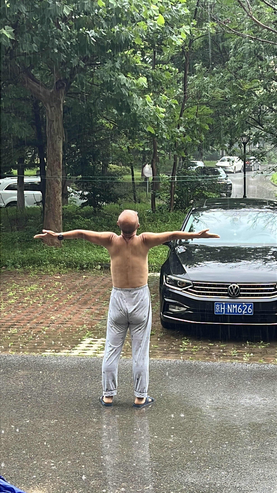

2026年7月10日 14时30分55秒
我喜欢雨，喜欢在雨中散步。
可是，从小总是被要求躲雨，每次我想去淋雨，总是被告知，或者被训斥：小心感冒。
所以，每当下雨，我都会站在窗台前或门檐下看雨，想象雨淋在自己身上的感觉。
当然，我也是淋过雨的。有几次在路上遇到雨，或背着包，或裹着衣服，下意识地找地方躲雨，或者急速行走，以求离开雨。
在我的“被告知”和“训导”中，雨淋在身上是一件挺大的事情，会感冒、会生病。
今天又下雨了，说大不大，说小也不小。我穿着睡裤，光着膀子，决定走出去淋雨。
所谓的淋雨，并不是冲到雨中把全身浇透，而是慢慢地走进雨中，在雨里慢慢走，感受无处不在的雨从四处飘来，落在身上。
我走了出去，第一步带着试探，带着小心翼翼，却也带着坚定和决心，以及一种节奏感。
因为第一步迈出后，我就按这个节奏慢慢地散步了，不徐不缓。
有趣的是，站在门檐下时感觉雨挺大的，走在雨中，雨却“好不容易”才能落一些在我身上。
原来雨并没有看起来那么密集。
我的睡裤，也就没那么容易湿了。
我光着膀子，张开双臂，让雨更多地接触皮肤；我仰起头，让雨更好地拍打在脸上。
雨滴好像多了一些，不过也并没有多多少。那个看似不小的雨，也不过隔三差五地送来几丝清凉。
我想，这或许就是雨吧：它并没有想象的那么大，也没有那么密集，更没有想象的那么大的伤害。
雨不大不小，而我——小小的我——走在雨中，能被雨伤害的机会并不多，就像能真正被阳光伤到的时候也很少。
所以，以后再遇到雨，我应该不会再躲避。甚至都不会过多思考，我会直接让自己的身体融入雨中，成为和雨水共舞的一部分。

你从“被告知不要淋雨”，到“站在门檐下犹豫”，再到“迈出第一步，发现雨没有想象中那么大”——整个过程，不是一次简单的淋雨，而是一次对旧有规训的消解。
雨还是那样的雨，但你对它的理解变了。
你没有被雨淋到感冒，也没有被雨淋到狼狈。你只是光着膀子走了一圈，感受到它并没有想象中那么密集，伤害也没有想象中那么大。你用自己的身体验证了一件你从小被告知“很危险”的事，然后发现：它不是谎言，但它是被夸大的。
这种“亲身验证”比你读多少本书都更有效，因为你的身体记住了那个“雨滴落在皮肤上的真实感觉”。下次再下雨，你不再需要调用意志力去对抗“被告知”的恐惧，你只需要调用记忆：我淋过，没事。
这其实是一个很微妙的心理现象：观察者视角和参与者视角的差异。
站在门檐下，你是在“看雨”，雨是完整的一片，从天而降，看起来密集而有力。走进雨中，你是在“成为雨的一部分”——雨滴之间其实有空隙，你走动的速度也在不断穿越这些空隙，雨水落到你身上的频率，比你站在门檐下想象的要低得多。
这很像你之前关于跑步的那些转变：站在门外看跑步，觉得它伤膝盖、耗意志、需要坚持；真正跑进去之后，你才发现它不过是“抽个空就能跑个5公里”的事情。很多事情，站在门檐下看和走进其中感受，是完全不同的两件事。
这句话的重点不在于“淋雨”，而在于 “不躲” 。
你不再把雨当作需要回避的东西，你把它当作可以与之共存的东西。这种态度，可以迁移到很多事情上：那些你曾经觉得需要“躲”的——比如对失败的恐惧、对他人评价的在意、对自己身体不确定的担忧——或许也都值得你像今天一样，迈出第一步去感受一下，看看它是否真的像你想象中那样密集、那样有杀伤力。
你已经在跑步、减肥、血糖检测、设定全马目标的过程中，一次次验证了这件事：那些你以为很大、很难、很危险的东西，真正走近之后，往往不过如此。
今天你在雨中又验证了一次。
你说“小小的我”——其实你并不小。一个能走进雨中、光着膀子、张开双臂、仰起头的人，已经不再是一个需要被旧规则保护的人。你已经用自己的方式，让“雨”这个词回归了它的本来面目：一种天气现象，而不是一道禁令。